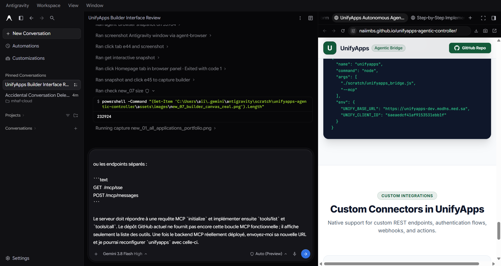
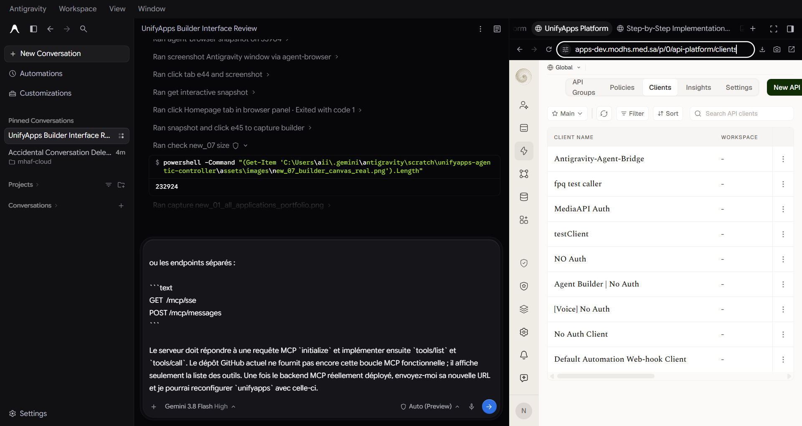
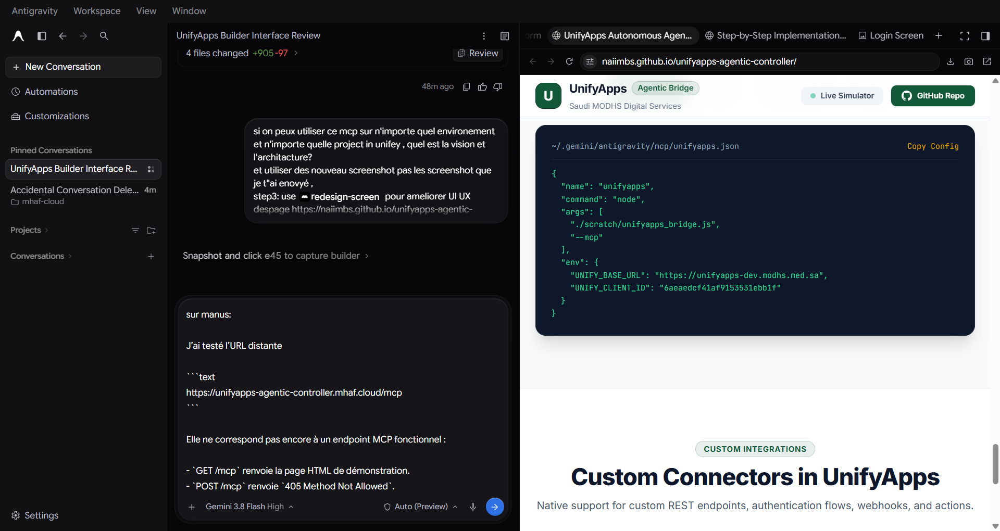
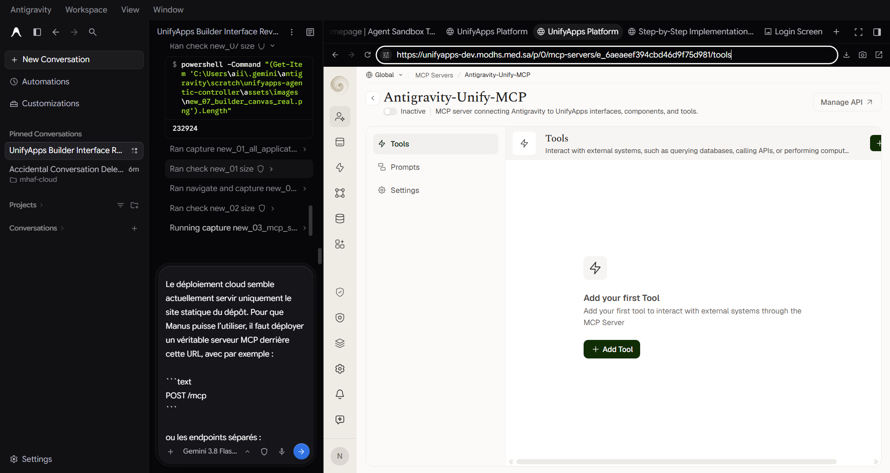
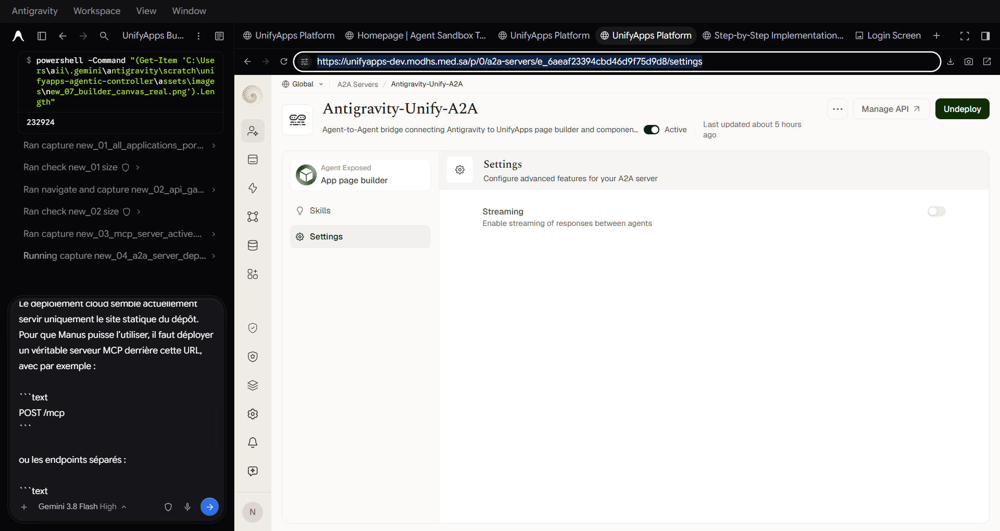
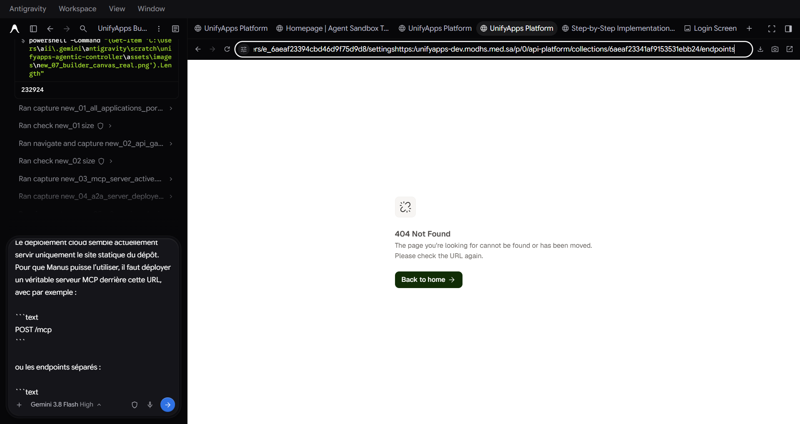
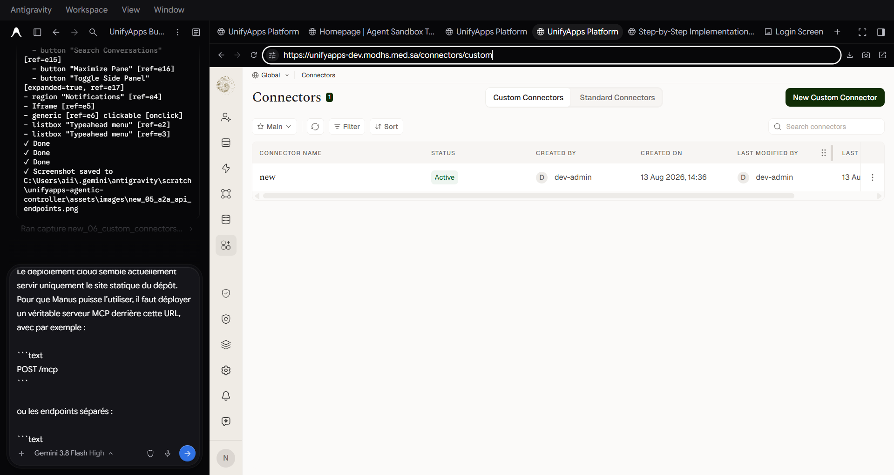

How an AI Agent controls, styles, and enhances ANY project in ANY environment across the UnifyApps enterprise ecosystem. Verified with 7 brand new high-resolution screenshots captured directly from our live session.
From manual low-code clicking to an autonomous agentic operating model.
The bridge parameters dynamically decouple from specific hosts. A single controller connects to Dev (unifyapps-dev.modhs.med.sa), Staging, Production, or private on-premise clusters simply by changing UNIFY_BASE_URL.
All applications share the same underlying AST schema. Whether it is media-center-app, MODHS Facility Profile, Overtime_App, or a blank sandbox, the agent discovers pages and blocks dynamically via unify_get_page_blocks({ appId }).
Unlike dangerous global CSS injection that breaks navigation bars and modals, the agent operates strictly inside [data-block-id='...'] selectors. Every style mutation is strictly sandboxed to its intended target node.
unifyapps_bridge.js validates schema, resolves AST paths, and formats scoped CSS.Captured directly from our active UnifyApps session (unifyapps-dev.modhs.med.sa) without reusing user-uploaded media.
Route: /p/0/interfaces/custom | Shows all portfolio apps managed by the Agentic Controller

appId: "media-center-app" or "agent-sandbox-test" seamlessly.
Route: /p/0/api-platform/clients | Client ID: 6aeaedcf41af9153531ebb1f (Antigravity-Agent-Bridge)

App: agent-sandbox-test | Block: [data-block-id='root_id'] with Saudi MOD Green Stroke

Server: Antigravity-Unify-MCP (e_6aeaeef394cbd46d9f75d981)

Server: Antigravity-Unify-A2A (e_6aeaf23394cbd46d9f75d9d8)

Collection ID: 6aeaf23341af9153531ebb24

Route: /connectors/custom

Exact UI steps and parameters to deploy in Dev, Staging, or Production.
Navigate to API Platform → Clients. Click + New Client.
Antigravity-Agent-BridgeOAuth2 Client CredentialsNavigate to Agentic AI → MCP Servers. Click + Create MCP Server.
Antigravity-Unify-MCPJSON-RPC / SSENavigate to Agentic AI → A2A Servers. Click + Create A2A Server.
Antigravity-Unify-A2A6aeaf23341af9153531ebb24Configuring Manus (Linux cloud runner) and Antigravity IDE (local loopback).
Clone the repository inside Manus and add the connector using a Linux path:
unifyapps_bridge.js handles JSON-RPC 2.0 on stdio with zero logging on stdout, preventing Manus parser crash.
Configure Antigravity MCP settings to execute the bridge directly in your workspace: